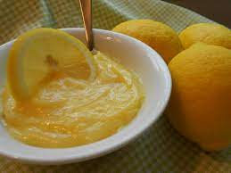

Description
Easy lemon custard pastry cream for lemon tartlets.
Ingredients
- 3 cups heavy cream, divided
- 5 large egg yolks
- ¾ cup cornstarch
- 1 ½ cups sugar
- ½ cup fresh lemon juice
Steps
-
Whisk together 1 cup heavy cream, egg yolks, and cornstarch in a bowl. Set aside.
-
Combine remaining 2 cups heavy cream, sugar, and lemon juice in a large, heavy-bottomed saucepan over medium heat. Whisk to dissolve sugar. Bring to a gentle boil; boil until mixture begins to thicken, about 10 minutes. Add egg yolk mixture slowly, whisking constantly until it thickens, about 5 minutes. Mixture will break; pour into a glass bowl. Press a piece of plastic wrap directly on the surface of the mixture to prevent skin forming. Let cool completely at room temperature.
-
Pour cooled mixture into a mixing bowl. Beat at medium speed with an electric mixer fitted with a wire whip until thick and creamy.